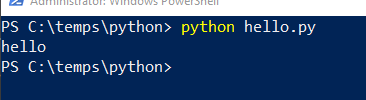
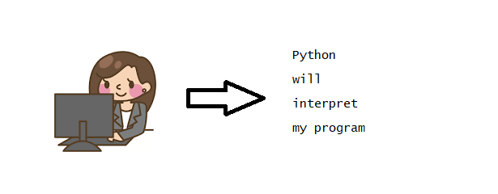
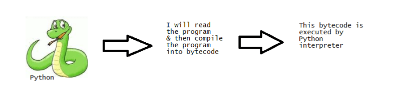
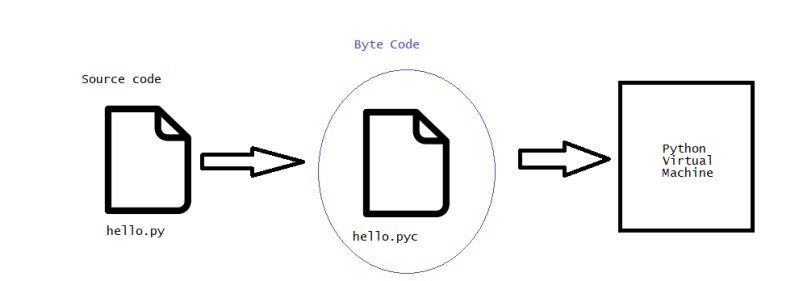

06 Python Interpreter
Python Interpreter
- Python Interpreter executes the python programs.
- When you install python on your system, interpreter is also part of installation.
- Python interpreter will read your program & execute.
- Lets create a simple program called as hello.py
print("hello python") - Open terminal on your system (Powershell)

- To understand how this program executed lets look at two view
Programmer’s view
- Our program consists of print statement, Now interpreter will find where the print is defined and execute it.
- When we run our programs it appears as if python is interpreting.

Pythons view
- Program is read and then compiled to bytecode, this bytecode is executed by python interpretor. 
Bytecode compilation
- bytecode of your programs end with .pyc extension.
- When will it will
- Source code changes
- Change in the modules
- Python bytecode is executed by Python Virtual Machine (PVM) 
Python Implementations
- Python is a open source and Python has various implementations
- Lets look at 4 popular implemenation which are production ready
- CPython
- Jython
- IronPython
- PyPy
- These implemenatios deal with how to generate byte code & how to run PVM. As a developer your code for python will not change per implemenations
CPython
- Referred as Classic Python & it most up-to-date & widely used flavor of python.
- CPython is a compiler, interpreter & set of built-in and options extensions & all of this is implemented in Language C
Jython
- Jython is Python implementation for any Java Virtual Machine
- Python code gets converted into Java Byte code & then is executed using JDK
IronPython
- IronPython is Python implementation for any .net framework
- Python code gets converted into MSIL (Microsoft Intermediate Language) & gets executed using .net framework
PyPy
- The subset of Python is coded in Python iteself.
Other Implementations
- PYJION: Opensource project from Microsoft whose primary goad is to add API to CPython
- Anaconda & miniconda: This is Python distribution from Continuum Analytics. Along with Python standard library Anaconda adds some interesting libraries. They have a packaging technolongy called conda.
- NUTIKA: Converts your python code into C++
- GRUMPY: Converts Python Code in to Go.
Note
- In this course we will be using Standard Python(CPython).
Python Development & Versions
Python’s intellectual property is vested in Python Software Foundation. All the proposed changes in Python are detailed as Python Enhancement Proposals (PEPS). There are some information PEP’s for developers who use python.
Installing Python
- Windows: Download installer from here & install.
- Mac: Install homebrew & use homebrew to install python
- Linux:
Download tar file untar the file add the folder to the path